Solaine is the third hero you will unlock at Stage 7. She has some very powerful abilities. But she has the lowest health of all the heroes.
Abilities
| Frostbolt | |
|---|---|
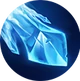 |
Throws a Frostbolt that deals 400% of your damage. The attack speed of the target hit by Frostbolt is reduced by 70% for 5 seconds. 6 seconds cooldown. Cost: 35 Mana. |
{kind=link}
| Freeze | |
|---|---|
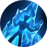 |
Freeze your target for 8 seconds. While the enemy is frozen he will be receiving 80% more damage from all sources. 20 seconds cooldown. Cost: 50 Mana |
{kind=link}
| Ice Barrage | |
|---|---|
| Throw 20 icebolts to random enemies over 10 seconds each dealing 60% of your damage. 30 seconds cooldown. Cost: 70 Mana. | |
{kind=link}
Gear
| Weapon | Chest | Boots | Ring | |
|---|---|---|---|---|
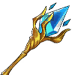 |
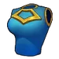 |
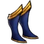 |
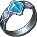 | |
| Wrist | Shoulder | Belt | Relic | |
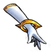 |
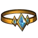 |
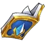 | ||
| Ankh | Rune | Idol | ||
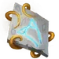 |
||||
| Talisman | Necklace | Trinket | ||
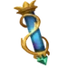 |
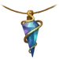 |
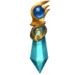 |
{kind=link}
{kind=link}
{kind=link}
{kind=link}
{kind=link}
{kind=link}
{kind=link}
{kind=link}
{kind=link}
{kind=link}
{kind=link}
{kind=link}
{kind=link}
{kind=link}
Biography
Guardian of the Realm
{kind=link}
{kind=link}
Guardian of the realm
It is said that great men and women are made, not born; but this is not true for Solaine. Born in the Storm Spire, the ancient seat of the Elemental Mages and their Council of Enigma, her life was filled with magic. The only daughter of the Wizard King Laine and his wife Queen Sola, every mage of the Spire expected great things of her from the moment she drew breath. What else from the descendant of the founders of Enigma, the most powerful mage clan in the known world?
Magic came naturally to her. Even the greatest tutors of the Spire had to work twice as hard, as keeping up with young Solaine's raw talent and energy was work in itself. Before most mages even attempted to use a Staff, the greatest tool available to a practitioner of magic, she had mastered the four Elements and powerful spells. Hungry for magic and to prove herself worthy of their ancestors, she read scroll after scroll of spells and enchantments. Like any prodigy, the written knowledge of others before her was not enough. Solaine was eager to leave her own mark in the wizarding world, to explore and learn new and undiscovered magic. Life as a Spire Mage was full of wonder, but the unexplored held much more promise. As soon as she graduated as a Master Mage and forged her Staff, she demanded the ancient right to travel the world before returning to the Spire
For many years she traveled the realms of Humans and Elves and their different mage clans as an honored ambassador of the Enigma, learning more about her powers and testing her limits. Defending herself became an everyday task, as a prized target for bandit clans and warlords. Her beautiful face and flowing gowns made her seem an easy target, even as a mage, but as those criminals each found out in turn, looks can be deceiving. As her fame grew, small cities and many villages sent envoys asking for her help against monsters and the rising tide of evil. Solaine, always eager for opportunities to learn, asking only for knowledge in return, quickly became known as "Guardian of the Realm".
Every great hero needs a test, and Solaine's began when a messenger arrived from Maplemere, a small town on the borders between the Riverlands and the Ebony Jungle. An ancient monster from the Age of Adventure, the Hydraling, had awoken from its hibernation, where it recovered over thousands of years after a great battle with a forgotten hero. Knowing the Ebony Jungle to be a tropical, unexplored forest full of mysterious monsters and lost knowledge, Solaine accepted the call for help, hoping to learn more about this little-known beast and the mysteries of the Ebony Jungle.
The trail of devastation was easy to follow, and after a few days' travel, she found the Hydraling in its lair, an underground lake. Sure of her ability, and without hesitation, she summoned a great blade of air and cut off its head in what seemed like an easy victory. The Hydraling however was not a simple beast, a spawn of the Lizard God, Hydra, it was gifted the power of regeneration. From its exposed and wounded neck, it grew two new heads, more terrifying than the last. Summoning flurry after flurry of blades, Solaine fought a losing battle against a monster with more heads than an army could handle. Terrified at the devastation this creature would unleash and ashamed at her weakness as a mage, she fled straight back to Storm Spire to apologize to her parents for dishonoring their proud and ancient people.
Her father, old and wise with the experience of many lifetimes, was proud of Solaine. He had seen many wizards lie or hide rather than admit they had been wrong. Smiling at his crying daughter, he revealed to her the "Book of Ice". The most well-kept secret of the Spire, the ancient book held the knowledge necessary to manipulate the Element of water into an even more powerful tool. Solaine, speechless at the idea that a mage could change an Element's basic form, studied the book for days without rest. Before dust of the closing book had settled, Solaine had run down the steps of the Spire to return to the Ebony Jungle.
As soon as she arrived in its lair, the fearsome Hydraling lifted its heads ready to attack. Whispering arcane chants and calling on forgotten Elemental energies, she ignored the oncoming terror. Spinning her body and Staff as if dancing with the whirling spell and the turning water of the thrashing lake, at the moment the spell's strength was its peak and the heads were almost on her, she unleashed the power of ice directly into the water. Exhausted from the new Elemental Energy, she looked up to see the frozen jaws of the Hydraling's heads only inches from her body. Touching the magical Nevermelt Ice, she knew she had defeated a creature designed to never truly lose
When she visited Maplemere to let the townspeople know they were safe at least, she paid little attention to the adoration and celebrations in her honor. The victory was not imprisoning the monster, but the priceless knowledge that her quest for new magic had just begun.
The Influencer
{kind=link}
{kind=link}
The influencer
This skin could only be obtained during the 5 Year Anniversary Event.
One day, inspired by legendary enchantress Barbara, renowned mage Solaine started using her magical mirror in her free time. Dressed in dazzling pink, she created enchanting 'mirror-casts', showcasing her beauty and magical prowess to every reflective surface in the realm. Balancing epic adventures with this new hobby, she aimed to inspire future female mages. Influencing youth and gaining popularity, Solaine secured enchantment contracts, a role model for aspiring girl mages and a savvy businesswoman in the magical arts.
The Winter's Grace


{kind=link}
The winter's grace
This skin could only obtained during the Epic Games Special Offer from December 11 2025 to January 8 2026.
When the first frost touched the Stormspire, Solaine felt a strange stillness in the elements and the magic of the season fading away. To rekindle it, she wove her spells into snowflakes, each carrying warmth and joy. Traveling from village to village in her festive robes, she lit crystal trees and thawed frozen hearts with laughter and light. Some say the glimmering trails in the night sky are her magic at work, painting hope across the heavens. For when winter’s chill grows deep, Solaine’s grace keeps the world aglow.
Dialogue
Fighting scene:
- Aurelia: Solaine be careful. A group of Undead is coming to you.
- Solaine: Thank you my goddess. I am ready for them!
- Riper: HA HA HA, Is that all you got? You are surrounded!
- Riper: ATTAAAACK!!
- Solaine: Oh no. HEEEELP!
- Riper: Surrender. You are all ALONE! Nobody is coming to save you!
- Solaine: I won't give up so easy!
When approaching:
- Aurelia: Brave heroes, Solaine is close but she can’t hold much longer.
- Talia: Evil creature, Solaine is not alone.
- Riper: I will crush you all Mortals. There is nothing you can do.
After unlocking:
- Solaine: Thanks for saving me. I wouldn't survive without you.
- Burt: What happened here? How the Undead were so powerful?
- Solaine: Since they stole the Firestones, they are stronger than ever before.
- Solaine: If they start attacking villages with their new powers, everyone is doomed.
- Burt: We must find a way to stop them before it's too late.